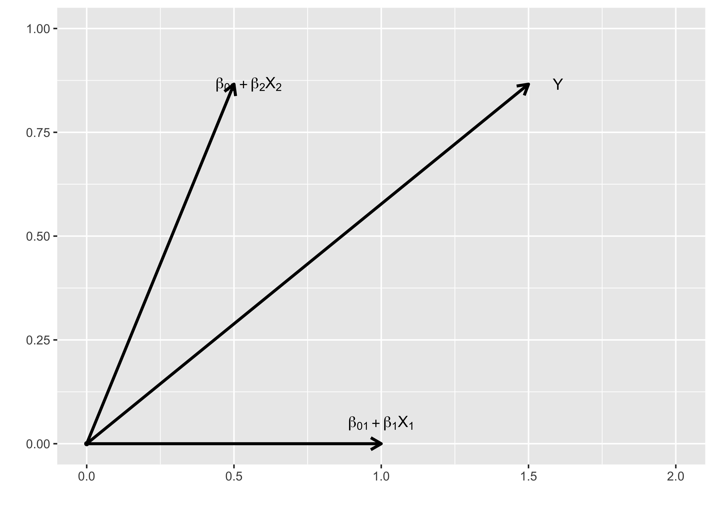
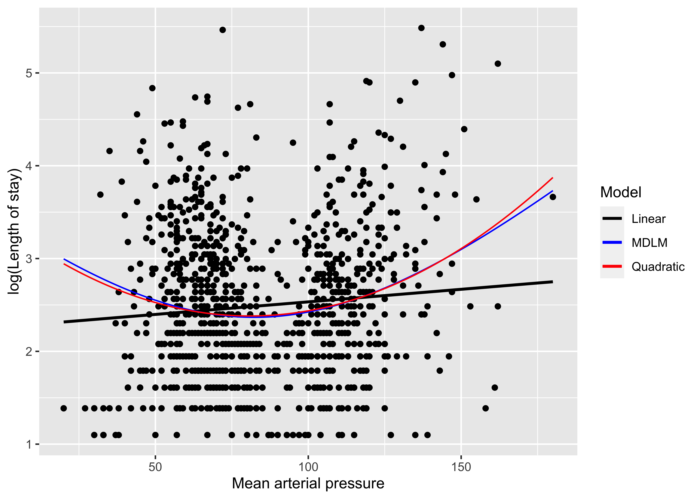

본 연구는 김진섭 대표가 박사학위 논문으로 계획했던 연구로, 결과적으로 학술지 게재와 심사통과에 실패했다는 것을 미리 알려드립니다. 계산법은 R package 로 만들었습니다.
Abstract
선형모형을 적용하기 어려운 \(J,U\)-shape같은 curved linear relationship을 비선형모형으로 분석하면 선형모형에 비해 해석이 어려워진다. 이에 본 연구에서는 선형관계의 컨셉은 유지하면서 \(J,U\)-shape 같은 curved linear relationship을 표현할 수 있는 모형을 제안한다. 이것은 선형모형의 무대를 1차원에서 휘어진 다차원 공간으로 확장함으로서 가능하며, curved linear relationship을 다차원공간에서의 선형관계로 재해석할 수 있다. 시뮬레이션 결과 선형관계는 기존의 선형모형과 동등한 성능으로 추정하면서 더 우수한 성능으로 curved relationship를 추정할 수 있었고, 실제 \(U\)-shape을 보이는 관계를 다차원공간에서의 선형관계로 쉽게 설명할 수 있었으며 \(U\)-shape의 cut-off값도 쉽게 계산할 수 있었다. 선형모형을 완벽히 포함하여 확장한 본 연구의 제안이 건강연구의 새로운 표준으로 자리잡을 수 있으리라 자신한다.
Introduction
Multivariable Linear Model은 분석결과의 해석이 간단하면서도 여러 독립변수들을 동시에 고려할 수 있는 장점이 있어 Health Science에서 널리 이용된다(Schneider, Hommel, and Blettner 2010). 그러나 모든 관계가 선형관계인 것은 아니며 흔한 non-linear relationship으로 \(J,U\)-shape같은 curved linear relationship이 있다(Calabrese and Baldwin 2001; Power, Rodgers, and Hope 1998; de Wit et al. 2009; Knutson and Turek 2006). 이런 관계를 단순히 선형모형으로 분석하게 되면 간단하긴 하나 정확한 추정을 할 수 없으며 exponential, Log나 제곱, 루트를 이용해 변수를 치환하여 선형모형을 이용할 수 있다(Jagodzinski and Weede 1981). 그러나 치환으로 선형관계를 만들 수 있는 경우는 극히 일부분에 지나지 않아 많은 경우에 비선형모형(non-linear model)을 활용하는데, 대표적인 방법으로는 독립변수의 고차항을 모형에 추가하거나(Polynomial Model) 비모수적인 방법으로 곡선을 추정하는 Additive Model, 그리고 Multi-layer를 이용한 neural network이 있다(Jagodzinski and Weede 1981; Buja, Hastie, and Tibshirani 1989; Hornik, Stinchcombe, and White 1989). 그러나 이런 비선형모형들은 휘어진 모양을 해석하기 때문에 직선으로 해석하는 선형모형에 비해 해석이 복잡할 수 밖에 없다.
이와 비슷한 문제가 20세기 초 물리학에서도 있었는데 태양 주위에서 빛이 휘는 문제가 바로 그것이다. 이 현상은 뉴턴의 물리학으로 설명되지 않았었는데, 아인슈타인(Albert Einstein)은 빛이 휘는 것이 아니라 태양 근처의 4차원 시공간(spacetime)이 휘어진 것이라는 발상의 전환을 통해 이 문제를 설명하였다(Coles 2001). 이것이 유명한 일반상대성이론으로 공간의 무대를 3차원이 아니라 휘어진 4차원으로 확장한다면 빛은 여전히 직선임을 의미한다(Verlinde 2011).
이에 저자는 아인슈타인의 아이디어와 비슷하게 선형모형의 무대를 휘어진 다차원 공간으로 확장함으로서 \(J,U\)-shape을 선형관계로 해석할 수 있는 Multi-dimensional Linear Model(MDLM)을 제안한다. 이것은 기존의 선형모형에 차원(dimension)의 개념을 추가하여 일반화한 것으로 모든 독립변수(independent variable)들이 같은 dimension의 정보라면 기존의 Linear Model과 일치한다. 먼저 개념을 수식으로 정리한 후 계수들을 추정하는 방법을 설명할 것이며 다양한 시나리오를 시뮬레이션하여 MDLM의 유용성을 살펴보겠다. 마지막으로 실제 \(U\)-shape을 갖는 데이터에 본 모형을 적용하여 유용성을 평가할 것이다.
Formula
음이 아닌 실수 \(Y\)를 종속변수로 실수 \(X_1\), \(X_2\),\(\cdots\), \(X_n\)들을 독립변수라 하자.
2 independent variables, 2 dimensions
\(Y\)와 \(X_1\), \(X_2\)의 선형관계를 2차원 벡터공간에서 표현하면 아래와 같다.
\[ \begin{aligned} \boldsymbol{\vec{Y}} &= (\beta_{01} + \beta_1X_1)\boldsymbol{\vec{g}}_1 + (\beta_{02} + \beta_2X_2)\boldsymbol{\vec{g}}_2 \end{aligned} \] \(\boldsymbol{\vec{g}}_i\)들은 \(X_i\)방향으로의 단위벡터로서 크기는 모두 1이며 Figure @ref(fig:fig1)에 그림으로 표현되어 있다.
이것은 방향의 개념을 제외하면 기존의 선형모형과 같으며, 만일 \(\boldsymbol{\vec{g}}_1\)과 \(\boldsymbol{\vec{g}}_2\)이 같은 방향이라면 아래와 같이 기존 선형모형과 일치하게 된다.
\[ \begin{aligned} Y &= (\beta_{01} + \beta_1X_1) + (\beta_{02} + \beta_2X_2) \\ &= \beta_{0} + \beta_1X_1 + \beta_2X_2 \end{aligned} \] (\(\beta_0 = \beta_{01}+\beta_{02}\))
해석은 기존의 선형모형과 같이 변화량을 이용하며 \(Y\)와 \(X_1\), \(X_2\)의 변화량에 대해서 식을 재구성하면 아래와 같다.
\[ \begin{aligned} d\boldsymbol{\vec{Y}} &= \beta_1dX_1\boldsymbol{\vec{g}}_1 +\beta_2dX_2\boldsymbol{\vec{g}}_2 = \beta_1d\boldsymbol{\vec{X}_1} + \beta_2d\boldsymbol{\vec{X}_2} \end{aligned} \] 즉, \(X_2\)가 고정되어 있을 때 \(Y\)는 \(X_1\)의 방향으로 \(\beta_1\)만큼 증가한다고 할 수 있으며, \(X_1\)이 고정되어 있다면 \(Y\)는 \(X_2\)의 방향으로 \(\beta_2\)만큼 증가한다고 볼 수 있다.
벡터로 표현된 위 식을 \(\boldsymbol{\vec{g}}_1\)과 \(\boldsymbol{\vec{g}}_2\)의 내적값인 \(g_{12}\)를 이용해 스칼라로 표현하면 아래와 같다.
\[Y^2 = (\beta_{01} + \beta_1X_1)^2 + (\beta_{02} + \beta_2X_2)^2 + 2g_{12}(\beta_{01} + \beta_1X_1)(\beta_{02} + \beta_2X_2)\]
만약 \(g_{12}=0\) 즉, \(X_1, X_2\)가 독립된 차원을 갖는다면 \(X_2\)가 고정되었을 때 \(X_1\)과 \(Y\)의 관계는 \(X_1=-\frac{\beta_{01}}{\beta_1}\)에서 최소값을 갖는 \(U\)-shape을 보이며 \(X_2\)와 \(Y\)의 관계도 마찬가지이다. 일반적으로 \(Y^2 = (\beta_{01} + \beta_1X_1 + g_{12}(\beta_{02} + \beta_2X_2))^2+ (1-g_{12}^2)(\beta_{02} + \beta_2X_2)^2\)로 식을 변형하면 \(X_2\)가 고정되었을 때 \(X_1\)과 \(Y\)의 관계는 \(X_1 = -\frac{\beta_{01}+g_{12}(\beta_{02} + \beta_2X_2)}{\beta_1}\)에서 최소값을 갖는 \(U\)-shape을 보임을 확인할 수 있다.
\(p\) independent variable, 2 dimensions
일반적으로 독립변수가 \(p\)개인 경우 \(X_1, \cdot, X_l\)이 같은 차원, \(X_{l+1}, \cdot, X_p\)가 같은 차원에 있다고 가정하면 다음과 같이 벡터식과 스칼라식을 표현할 수 있다.
\[ \begin{aligned} \boldsymbol{\vec{Y}} &= (\beta_{01} + \beta_1X_1 + \cdots + \beta_lX_l)\boldsymbol{\vec{g}}_1 + (\beta_{02} + \beta_{l+1}X_{l+1} \cdots + \beta_pX_p )\boldsymbol{\vec{g}}_2 \\\\ Y^2 &= (\beta_{01} + \beta_1X_1 + \cdots + \beta_lX_l)^2 + (\beta_{02} + \beta_{l+1}X_{l+1} \cdots + \beta_pX_p)^2 \\ + & 2g_{12}(\beta_{01} + \beta_1X_1 + \cdots + \beta_lX_l)(\beta_{02} + \beta_{l+1}X_{l+1} \cdots + \beta_pX_p) \end{aligned} \]
\(p\) independent variable, \(p\) dimensions
마지막으로 독립변수들이 전부 다른 방향을 갖고 있다고 가정한다면 아래와 같은 벡터식과 스칼라식을 얻는다.
\[ \begin{aligned} \boldsymbol{\vec{Y}} &= (\beta_{01} + \beta_1X_1)\boldsymbol{\vec{g}}_1 + (\beta_{02} + \beta_{2}X_2 )\boldsymbol{\vec{g}}_2 + \cdots (\beta_{0p} + \beta_pX_p)\boldsymbol{\vec{g}}_p \\ &= \sum_{i=1}^{p}{(\beta_{0i} + \beta_iX_i)\boldsymbol{\vec{g}}_i} \\\\ Y^2 &= \sum_{i=1}^{p}{(\beta_{0i} + \beta_iX_i)\boldsymbol{\vec{g}}_i} \cdot \sum_{i=1}^{p}{(\beta_{0i} + \beta_iX_i)\boldsymbol{\vec{g}}_i} \\ &= \sum_{i=1}^{p}{(\beta_{0i} + \beta_iX_i)^2} + 2\sum_{i < j}{g_{ij}(\beta_{0i} + \beta_iX_i)(\beta_{0j} + \beta_jX_j)} \end{aligned} \]
여기서 \(g_{ij}\)는 \(X_i\)방향의 단위벡터 \(\boldsymbol{\vec{g}}_i\)와 \(X_j\)방향의 단위벡터 \(\boldsymbol{\vec{g}}_j\)의 내적값으로 두 벡터의 dependency를 나타낸다. 위의 경우와 마찬가지로 모든 \(g_{i}\)들의 방향이 같다면 아래와 같이 기존의 선형모형과 같은 관계를 얻는다.
\[Y= \beta_0 + \beta_1X_1 + \beta_2X_2 + \cdots + \beta_pX_p\] (단, (\(\beta_0 = \beta_{01}+\beta_{02}+\cdots + \beta_{0p}\)) )
Estimation
\(\beta = (\beta_1, \beta_2, \cdots, \beta_p, \beta_{01}, \beta_{02}, \cdots, \beta_{0p})\) estimation을 위해 최소화해야 할 cost function은 아래와 같이 오차제곱의 합(Sum of Squared Error: SSE)으로 하면 자연스럽게 기존 선형모형의 최소제곱 추정을 일반화 할 수 있다.
\[SSE(\beta) = \sum_{k=1}^N (Y_k - \sqrt{\sum_{i=1}^n(\beta_iX_{ki}+\beta_{i0})^2 + 2\sum_{i<j}g_{ij}(\beta_iX_{ki}+\beta_{i0})(\beta_jX_{kj}+\beta_{j0})})^2\]
(\(Y_k, X_{ki}\): \(k\)th individual’s \(Y, X_{i}\) value)
위 식에서 \(g_{ij}\)가 전부 1이라면 \(SSE(\beta) = \sum_{k=1}^N (Y_k- \beta_0 -\beta_1X_{k1} - \beta_2X_{k2} - \cdots - \beta_pX_{kp})^2\)로 기존 선형모형의 최소제곱추정과 동일한 것을 확인할 수 있다.
\(\beta\) Estimation
기존 선형모형과 달리 \(SSE(\beta)\)를 최소로 하는 \(\beta\)값은 직접 계산하기 어려워, optimization technique을 이용하며 Nelder-Mead, BFGS, CG, L-BFGS-B 등 다양한 방법이 있다 (Nelder and Mead 1965; Fletcher 1964; Byrd et al. 1995). 위의 방법들을 활용하여 우리는 초기 \(\beta\)값들부터 시작해서 반복적인 계산을 통해 수렴값을 얻게 된다. 한편 초기값이 바뀌면 \(SSE(\beta)\)의 값은 같더라도 \(\beta\)들의 부호가 다른 결과를 얻을 가능성이 있는데 이는 \(SSE(\beta)\)가 \(\beta\)들의 2차식으로만 구성되어 있기 때문이며, \(\beta\)들의 부호가 바뀌더라도 \(SSE(\beta)\)가 같다면 해석은 동일하다.
추정된 \(\beta\)값들의 standard error들은 \(SSE(\beta)\)의 hessian matrix(\(H\))로 부터 구할 수 있다. 어떤 함수 \(f(\theta)\)의 hessian matrix란 \(f(\theta)\)를 2번 미분한 성분들로 이루어진 행렬인데, 일반적으로 \(\theta\)의 variance와 반비례함이 알려져 있다(Dovi, Paladino, and Reverberi 1991). 여기에서는 1변수 함수의 예를 통해 직관적으로 이해해보도록 하자. \(f(\theta)\)가 \(\theta_0\)에서 최소값을 갖을 때 \(f\)를 1번 미분한 값은 0임을 이용, \(f\)를 \(\theta_0\) 부근에서 2차항까지만 테일러 급수전개를 하면
\[ \begin{aligned} SSE(\hat{\theta} + d\theta) &= SSE(\hat{\theta}) + H \cdot\dfrac{(d\theta)^2}{2} \end{aligned} \]
이고 \(d\theta\)에 대해 정리하면
\[(d\theta)^2 = 2\cdot H^{-1}\cdot (SSE(\hat{\theta}+d\theta)-SSE(\hat{\theta}))\]
이 된다. 즉 hessian이 커질수록 \(\theta\)의 분산에 해당하는 \((d\theta)^2\) 이 감소함을 알 수 있다.
일반적으로 \(SSE(\beta)\)를 최소로 하는 \(\hat{\beta}\)들의 variance-covariance matrix는 아래와 같이 표현되며, 대각성분에 루트를 취하면 \(\beta\)들의 standard error 값이 되어 p-value와 confidence interval(CI)을 계산할 수 있다(Dovi, Paladino, and Reverberi 1991).
\[\text{vcov}(\hat{\beta}) = 2\cdot H^{-1}\cdot MSE(\hat{\beta})\]
(\(MSE\): Mean Squared Error)
Estimation of \(g_{ij}\)
위에 설명한 추정은 \(g_{ij}\)가 고정되었을 때를 가정한 것인데, \(g_{ij}\)를 데이터에서 직접 구할 수도 있으며 이것은 Generalized Estimating Equation(GEE)에서 working correlation matrix를 직접 계산할 수 있는 것과 마찬가지이다(Pan and Connett 2002). 이 때는 \(g_{ij}\)들은 \(\beta\)들과 달리 -1에서 1까지의 값을 갖는다는 제한조건이 있어 constrained optimization technique를 이용해야 하며 나머지는 앞서와 동일하다(Rios and Sahinidis 2013).
Simulation
\(Y\)와 \(X_1\), \(X_2\)의 여러가지 관계에 대한 Simulation을 이용해 MDLM의 유용성을 살펴볼 것이며 구체적으로 다음의 5개 모형을 비교하겠다.
Linear Model (LM)
MDLM with fixed \(g_{12}=0\) (MDLM 1)
MDLM with non-fixed \(g_{12}\) (MDLM 2)
Quadratic Model: Polynomial model with 2nd degree (Quadratic)
Generalized Additive Model (GAM)
모형비교는 Root Mean Square Error(RMSE)와 Akaike Information Criterion(AIC)을 이용하였으며 GAM의 경우는 effective degree of freedom(edf)를 AIC 계산에 활용하였다(Wood 2001).
편의상 \(X_1\)과 \(X_2\)는 각각 1부터 10까지의 자연수를 갖는 것으로 가정하였으며 따라서 샘플수는 100이다. 모든 계산은 R 3.5.1의 optim, constrOptim 함수를 이용하였다.
Scenario 1: \(Y = X_1 + X_2\)
\(Y \sim N(X_1 + X_2, 1)\) 로 샘플링해 데이터를 생성하였으며 100회의 시뮬레이션을 수행해 RMSE와 AIC를 비교하였다(Table 1).
| LM | MDLM(1) | MDLM(2) | Quadratic | GAM | |
|---|---|---|---|---|---|
| RMSE | 1 ± 0 | 1.4 ± 0.1 | 1 ± 0 | 1 ± 0 | 1 ± 0 |
| DF | 4 | 5 | 6 | 6 | 7.6 ± 2.2 |
| AIC | 296.4 ± 8 | 358 ± 11.3 | 300.4 ± 8 | 299.6 ± 9.1 | 289.8 ± 3 |
비교 결과 선형모형이 적은 parameter로 효율적인 추정을 하고 있음을 알 수 있었으며 \(g_{12}\)를 고정하지 않은 MDLM(2)가 선형모형과 비슷한 성능을 보이는데 이는 MDLM이 선형모형을 포함한 개념임을 생각했을 때 자연스러운 결과이다.
Scenario 2: \(Y^2 = X_1^2 + X_2^2\)
이번엔 \(Y \sim N(\sqrt{X_1^2 + X_2^2}, 1)\)로 샘플링해 데이터를 생성하여 마찬가지로 100회의 시뮬레이션을 수행하였다(Table 2).
| LM | MDLM(1) | MDLM(2) | Quadratic | GAM | |
|---|---|---|---|---|---|
| RMSE | 1.1 ± 0 | 1 ± 0.1 | 1 ± 0.1 | 1.1 ± 0 | 1.1 ± 0 |
| DF | 4 | 5 | 6 | 6 | 6.1 ± 0.5 |
| AIC | 317.4 ± 8.9 | 290.3 ± 12.8 | 292.1 ± 12.9 | 313.9 ± 5.2 | 313.2 ± 7.4 |
이번엔 MDLM(1)이 선형모형보다 확실히 우수한 추정값을 보이는것을 확인할 수 있으며, \(g_{12}\)를 고정하지 않은 MDLM(2) 또한 MDLM(1)과 비슷한 성능을 보이는 것을 확인할 수 있다.
Scenario 3: \(\boldsymbol{\vec{Y}} = (\beta_{01} + \beta_1X_1)\boldsymbol{\vec{g}}_1 + (\beta_{02} + \beta_2X_2)\boldsymbol{\vec{g}}_2\)
마지막으로 Scenario2를 일반화한 경우를 시뮬레이션하였다. \(\beta\)들은 -5~5, \(g_{12}\)는 -1~1의 값을 임의로 선택하여 \(\boldsymbol{\vec{Y}} = (\beta_{01} + \beta_1X_1)\boldsymbol{\vec{g}}_1 + (\beta_{02} + \beta_2X_2)\boldsymbol{\vec{g}}_2\)를 만족하는 \(Y\)를 샘플링하였다. 즉, \(Y \sim N(\sqrt{(\beta_{01} + \beta_1X_1)^2 + (\beta_{02} + \beta_2X_2)^2 + 2g_{12}(\beta_{01} + \beta_1X_1)(\beta_{02} + \beta_2X_2)}, 1)\)로 샘플링해 데이터를 생성하여 마찬가지로 100회의 시뮬레이션을 수행하였다(Table 3).
| LM | MDLM(1) | MDLM(2) | Quadratic | GAM | |
|---|---|---|---|---|---|
| RMSE | 1.1 ± 0 | 1.3 ± 0.2 | 1 ± 0 | 1.1 ± 0 | 1.1 ± 0 |
| DF | 4 | 5 | 6 | 6 | 5.8 ± 0 |
| AIC | 318.7 ± 8.3 | 341.3 ± 37.3 | 300.4 ± 7.6 | 317.3 ± 7.9 | 315.8 ± 7.8 |
시뮬레이션 결과 \(g_{12}\)를 추정할 수 있는 MDLM(2)가 다른 모형들보다 압도적으로 우수한 성능을 보이는 것을 확인할 수 있었다.
Apply to Real data
이번에는 실제 \(U\)-shape을 보이는 데이터를 MDLM으로 분석해보겠다. http://biostat.mc.vanderbilt.edu/dupontwd/wddtext/data/3.25.2.SUPPORT.csv의 데이터에는 응급실 내원 당시 평균 동맥압(mean arterial pressure, MAP)과 재실기간(length of stay,LOS)의 정보가 있는데 MAP와 LOS의 natural logarithm값의 관계가 \(U\)-shape이다. 이제 log(LOS)와 MAP의 관계를 아래와 같이 모델링 하였다.
\[\boldsymbol{\vec{\text{log(LOS)}}} = \beta_{00}\boldsymbol{\vec{g_{1}}} + (\beta_{01}+ \beta_1\cdot \text{MAP})\boldsymbol{\vec{g_{2}}}\]
즉 log(LOS)를 intercept와 MAP의 독립된 2차원으로 바라보는 관점으로 스칼라로 표현한 모형은 아래와 같다.
\[(\text{log(LOS)})^2 = \beta_{00}^2 + (\beta_{01}+ \beta_1\cdot \text{MAP})^2\]
MDLM을 이용하여 Intercept와 MAP의 2차원공간으로 log(LOS)를 \(\text{log(LOS)}^2 = 2.3669^2 + (-2.4276 + 0.0295\cdot\text{MAP})^2\)의 모형으로 추정할 수 있었고 AIC값은 \(2413\)였다. 이것은 선형모형으로 추정한 \(\text{log(LOS)} = 2.2624 + 0.0027 \cdot \text{MAP}\)(AIC \(2434\)), quadratic항을 추가한 \(\text{log(LOS)} = 3.3742 -0.0246 \cdot \text{MAP} + 2\times 10^{-4} \cdot \text{MAP}^2\)(AIC \(2414\))보다 좋은 추정 결과이다(Figure @ref(fig:fig2)). 또한 U shape의 cutoff값을 \(\dfrac{2.4276}{0.0295} = 82.29\)로 간단히 계산할 수 있었다.

Discussion
MDLM을 이용해서 기존의 선형모형을 완벽히 포괄하면서 선형모형의 개념을 휘어진 다차원 공간으로 확장할 수 있었고, 이를 통해 \(J,U\)-shape같은 curved linear relationship을 잘 추정하고 cut-off값도 쉽게 확인할 수 있는 장점을 확인할 수 있었다. 기존 선형모형의 틀은 유지하면서 그것만이 진실은 아닐 수 있다는 것을 보여줬다는 점, 이를 통해 선형관계가 아닌 것을 선형관계로 해석할 수 있는 방법을 제시하였다는 점에서 큰 의미가 있다. 향후 연구자들이 평면에서의 선형관계에 국한되지 않고 가설을 검증할 수 있을 것이며, 이를 토대로 Health science 연구에서 MDLM이 기존 선형모형을 포괄하는 새로운 표준으로 자리잡을 수 있으리라 예상한다.
MDLM의 추정식은 제곱근이 포함되어 있어 \(Y\)가 음수값을 갖고 있는 경우에는 적용하기 어렵다는 한계가 있다. 그러나 Health Science 분야에서 음수값을 갖는 지표는 별로 많지 않아 큰 문제는 아닐 것으로 생각하며, 변수변환을 통해 (+)로만 이루어진 새로운 변수를 만들어 해결할 수도 있다. 이 문제는 물리학자 Paul Dirac이 특수상대성이론을 고려한 양자역학의 방정식을 만들 때 겪었던 문제와 비슷한데, 그는 방정식의 계수가 꼭 숫자일 필요가 없고 행렬일 수도 있다는 기발한 아이디어로 이를 해결했다(Dirac 1928). 예를 들어 \(Y = \sqrt{\beta_0^2 + \beta_1^2x_1^2 + \beta_2^2x_2^2 }\) 일 때, \(\beta_0, \beta_1, \beta_2\)가 숫자일 필요가 없다는 것이다. \(\beta\)들을 행렬로 간주한다면 \(Y = \sqrt{\beta_0^2 + \beta_1^2x_1^2 + \beta_2^2x_2^2 } = \beta_0 + \beta_1x_1 + \beta_2x_2\) 꼴이 되어 제곱근을 없애는 것이 가능하다. 이 행렬들은 최소 \(4\times 4\) 이상의 정방행렬이어야 함이 알려져 있으며, 대표적인 예로 Cliford Algebra를 만족하는 Dirac matrices 있는데 \(\beta\)들의 예를 하나 들면 아래와 같다(Traubenberg 2009).
\[ \beta_0 = \alpha_0 \times \begin{pmatrix} 1 & 0 & 0 & 0 \\ 0 & 1 & 0 & 0 \\ 0 & 0 & -1 & 0 \\ 0 & 0 & 0 & -1 \end{pmatrix} \]
\[ \beta_1 = \alpha_1 \times \begin{pmatrix} 0 & 0 & 0 & 1 \\ 0 & 0 & 1 & 0 \\ 0 & -1 & 0 & 0 \\ -1 & 0 & 0 & 0 \end{pmatrix} \]
\[ \beta_2 = \alpha_2 \times \begin{pmatrix} 0 & 0 & 1 & 0 \\ 0 & 0 & 0 & -1 \\ -1 & 0 & 0 & 0 \\ 0 & 1 & 0 & 0 \end{pmatrix} \]
(\(\alpha_0, \alpha_1, \alpha_2\): 실수)
회귀계수가 숫자가 아닌 행렬이 가능하다는 이 아이디어가 향후 본 연구의 제곱근 문제를 극복하는 열쇠가 될 수 있을 것이라 생각한다.
\(SSE(\beta)\)를 최소화하는\(\beta\)를 구하기 위해 optimization tequnique을 활용한 것도 문제가 될 수 있는데, 얻은 \(SSE(\beta)\)값이 진짜 최소값(global minimum)인지 보장할 수 없기 때문이다. 이를 local minima problem이라 한다. 그러나 machine learning의 유행과 더불어 optimization technique도 빠르게 발전되고 있어 조만간 이 문제가 해결되리라 예상한다. 게다가 최근 연구에서 high-dimensional space인 경우 local minima problem은 매우 희귀한 것으로 나타났는데, 모든 차원에서 local minima일 가능성은 매우 낮기 때문으로 여겨진다(Dauphin et al. 2014).
Introduction에서 언급했듯이 아인슈타인(Albert Einstein)은 공간의 무대를 3차원이 아니라 휘어진 4차원으로 확장한다면 빛은 여전히 직선임을 설명하였는데, 수식으로 살펴보면 3차원 공간에서 기술된 뉴턴의 중력장 방정식 \(\nabla^2\Phi = 4 \pi G\rho_0\)를 휘어진 4차원에서의 방정식 \(\boldsymbol{R}_{uv}-\dfrac{1}{2}\boldsymbol{g}_{uv} = \dfrac{8\pi G}{c^4}\boldsymbol{T}_{uv}\)로 확장한 것이다(Verlinde 2011). 본 연구의 MDLM을 통해 선형공간의 무대를 다차원으로 확장하여 \(U\)-shape같은 curved linear relationship을 선형관계로 바라볼 수 있게 되었다는 점에서 물리학에서의 아인슈타인 방정식과 비슷한 의미를 가진다고 감히 주장해 본다. 실제로 \(\beta_i^2\) 를 \(g_{ii}\), \(g_{ij}\beta_i\beta_j\)를 합쳐서 \(g_{ij}\)라 놓으면 \(g_{ij}\)는 아인슈타인 중력장 방정식을 표현하는데 쓰이는 계량텐서(metric tensor) \(g_{uv}\)와 같은 의미를 갖게 되는데, \((dY)^2\)를 표현하는 식은 \(\sum_{i,j}g_{ij}(dX_i)(dX_j)\)로 휘어진 시공간에서 두 지점 사이의 거리를 나타내는 방법과 정확히 일치한다. 뉴턴의 방정식으로도 일상적인 운동을 잘 설명할 수 있으나 우주 공간같은 거시적인 스케일에서는 아인슈타인 방정식이 필요해지는데, 이와 마찬가지로 다차원 공간에서 기술된 본 연구의 MDLM이 population level에서 기존 선형모형보다 더 정확히 건강관련 현상을 설명할 수 있으리라 예상한다.
한편 일반상대성이론은 원자 이하의 미시세계의 현상을 잘 설명하지 못한다는 문제점이 있으며,불확정성의 원리(uncertainty principle)와 슈뢰딩거 방정식(Schrödinger equation)으로 대표되는 양자역학(quantum mechanics)의 논리가 이곳을 지배한다. 슈뢰딩거 방정식은 입자의 운동은 확률로 기술되고 그 확률은 파동처럼 행동한다는 내용으로 파동을 기술하는 함수가 복소수로 표현되어 있다는 것이 특이한 점이다. 복소수는 그 자체로는 실제 세계를 해석하기 어렵지만 켤레복소수와의 곱을 통해 확률을 표현하게 되고 놀라운 정확도로 미시세계의 현상을 설명할 수 있다. 이것은 Health science에도 중요한 시사점이 될 수 있는데, Health science에서 가장 큰 문제점 중 하나가 population level의 연구결과가 개인의 건강상태를 잘 설명하지 못한다는 것이다. 상태를 확률로 기술한다는 점에서는 베이지안 접근법(bayesian approach)이 양자역학의 접근과 비슷하지만 복소수를 활용할 수 없다는 점에서 차이가 있다. 양자역학이 미시세계의 현상을 설명하는 새로운 방법이 된 것과 마찬가지로 확률을 복소수를 포함한 파동함수로 표현하는 방법이 향후 Health science에서 개인의 건강상태를 설명하는 새로운 방법이 될 것이라 과감히 추측해 본다.
References
Buja, Andreas, Trevor Hastie, and Robert Tibshirani. 1989. “Linear Smoothers and Additive Models.” The Annals of Statistics 17 (2): 453–510. http://www.jstor.org/stable/2241560.
Byrd, Richard H., Peihuang Lu, Jorge Nocedal, and Ciyou Zhu. 1995. “A Limited Memory Algorithm for Bound Constrained Optimization.” SIAM Journal on Scientific Computing 16 (5): 1190–1208. https://doi.org/10.1137/0916069.
Calabrese, Edward J, and Linda A Baldwin. 2001. “U-Shaped Dose-Responses in Biology, Toxicology, and Public Health.” Annual Review of Public Health 22 (1): 15–33. https://doi.org/10.1146/annurev.publhealth.22.1.15.
Coles, P. 2001. “Einstein, Eddington and the 1919 Eclipse.” In Historical Development of Modern Cosmology, edited by V. J. Martı́nez, V. Trimble, and M. J. Pons-Borderı́a, 252:21. Astronomical Society of the Pacific Conference Series.
Dauphin, Yann N, Razvan Pascanu, Caglar Gulcehre, Kyunghyun Cho, Surya Ganguli, and Yoshua Bengio. 2014. “Identifying and Attacking the Saddle Point Problem in High-Dimensional Non-Convex Optimization.” In Advances in Neural Information Processing Systems 27, edited by Z. Ghahramani, M. Welling, C. Cortes, N. D. Lawrence, and K. Q. Weinberger, 2933–41. Curran Associates, Inc. http://papers.nips.cc/paper/5486-identifying-and-attacking-the-saddle-point-problem-in-high-dimensional-non-convex-optimization.pdf.
de Wit, Leonore M, Annemieke van Straten, Marieke van Herten, Brenda WJH Penninx, and Pim Cuijpers. 2009. “Depression and Body Mass Index, a u-Shaped Association.” BMC Public Health 9 (1). https://doi.org/10.1186/1471-2458-9-14.
Dirac, P. A. M. 1928. “The Quantum Theory of the Electron.” Proceedings of the Royal Society A: Mathematical, Physical and Engineering Sciences 117 (778): 610–24. https://doi.org/10.1098/rspa.1928.0023.
Dovi, V. G., O. Paladino, and A. P. Reverberi. 1991. “Some Remarks on the Use of the Inverse Hessian Matrix of the Likelihood Function in the Estimation of Statistical Properties of Parameters.” Applied Mathematics Letters 4 (1): 87–90. https://doi.org/10.1016/0893-9659(91)90129-j.
Fletcher, R. 1964. “Function Minimization by Conjugate Gradients.” The Computer Journal 7 (2): 149–54. https://doi.org/10.1093/comjnl/7.2.149.
Hornik, Kurt, Maxwell Stinchcombe, and Halbert White. 1989. “Multilayer Feedforward Networks Are Universal Approximators.” Neural Networks 2 (5): 359–66. https://doi.org/10.1016/0893-6080(89)90020-8.
Jagodzinski, Wolfgang, and Erich Weede. 1981. “Testing Curvilinear Propositions by Polynomial Regression with Particular Reference to the Interpretation of Standardized Solutions.” Quality and Quantity 15 (5). https://doi.org/10.1007/bf00190412.
Knutson, Kristen L, and Fred W Turek. 2006. “The u-Shaped Association Between Sleep and Health: The 2 Peaks Do Not Mean the Same Thing.” Sleep 29 (7): 878–79. https://doi.org/10.1093/sleep/29.7.878.
Nelder, J. A., and R. Mead. 1965. “A Simplex Method for Function Minimization.” The Computer Journal 7 (4): 308–13. https://doi.org/10.1093/comjnl/7.4.308.
Pan, Wei, and John E. Connett. 2002. “SELECTING THE WORKING CORRELATION STRUCTURE IN GENERALIZED ESTIMATING EQUATIONS WITH APPLICATION TO THE LUNG HEALTH STUDY.” Statistica Sinica 12 (2): 475–90. http://www.jstor.org/stable/24306972.
Power, Chris, Bryan Rodgers, and Steven Hope. 1998. “U-Shaped Relation for Alcohol Consumption and Health in Early Adulthood and Implications for Mortality.” The Lancet 352 (9131): 877. https://doi.org/10.1016/s0140-6736(98)23937-7.
Rios, Luis Miguel, and Nikolaos V. Sahinidis. 2013. “Derivative-Free Optimization: A Review of Algorithms and Comparison of Software Implementations.” Journal of Global Optimization 56 (3): 1247–93. https://doi.org/10.1007/s10898-012-9951-y.
Schneider, Astrid, Gerhard Hommel, and Maria Blettner. 2010. “Linear Regression Analysis.” Dtsch Arztebl International 107 (44): 776–82. https://doi.org/10.3238/arztebl.2010.0776.
Traubenberg, Michel Rausch de. 2009. “Clifford Algebras in Physics.” Advances in Applied Clifford Algebras 19 (3): 869. https://doi.org/10.1007/s00006-009-0191-2.
Verlinde, Erik. 2011. “On the Origin of Gravity and the Laws of Newton.” Journal of High Energy Physics 2011 (4): 29. https://doi.org/10.1007/JHEP04(2011)029.
Wood, Simon N. 2001. “Mgcv: GAMs and Generalized Ridge Regression for R.” R News 1 (2): 20–25. http://CRAN.R-project.org/doc/Rnews/.
Citation
BibTeX citation:
@online{kim2018,
author = {Kim, Jinseob},
title = {선형모형의 {다차원공간으로의} {확장} {(Linear} {Model} in
{Multidimensional} {Space)}},
date = {2018-11-08},
url = {https://blog.zarathu.com/jp/posts/2018-11-08-mdlm/},
langid = {en}
}
For attribution, please cite this work as:
Kim, Jinseob. 2018. “선형모형의 다차원공간으로의 확장 (Linear
Model in Multidimensional Space).” November 8, 2018. https://blog.zarathu.com/jp/posts/2018-11-08-mdlm/.